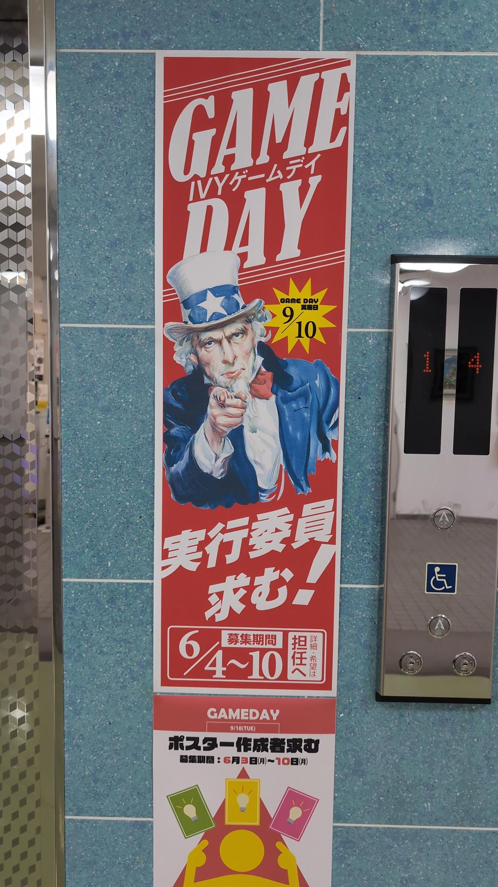
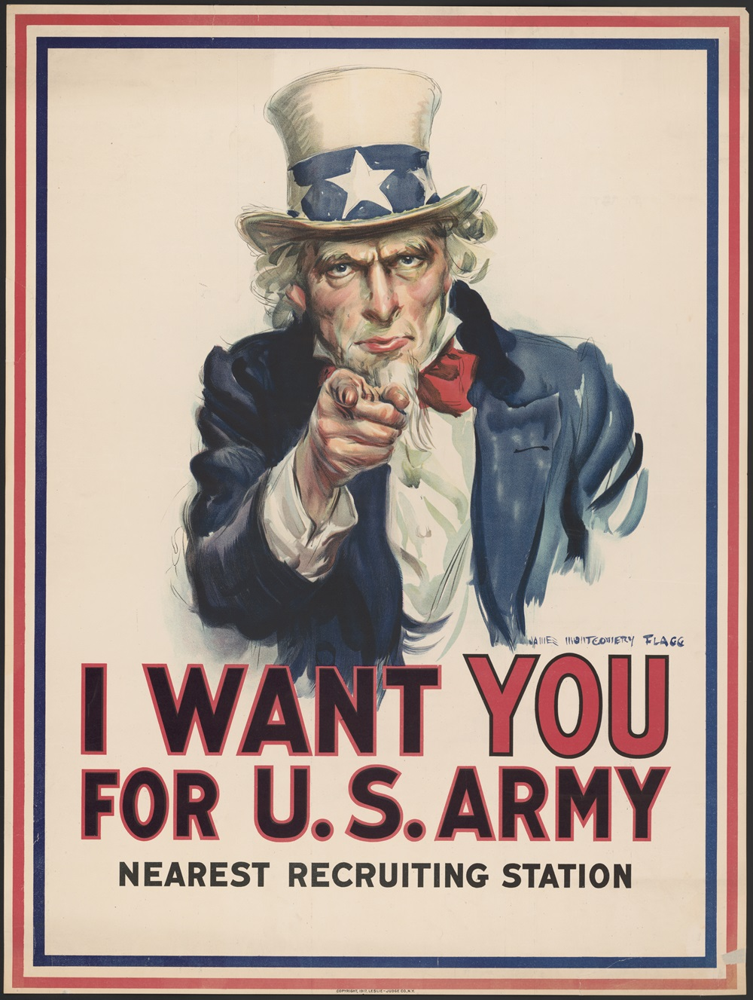
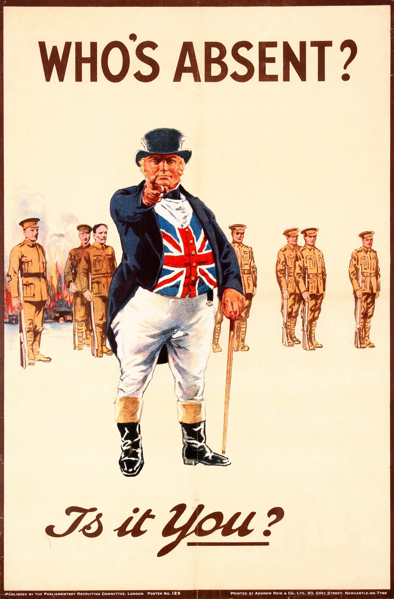
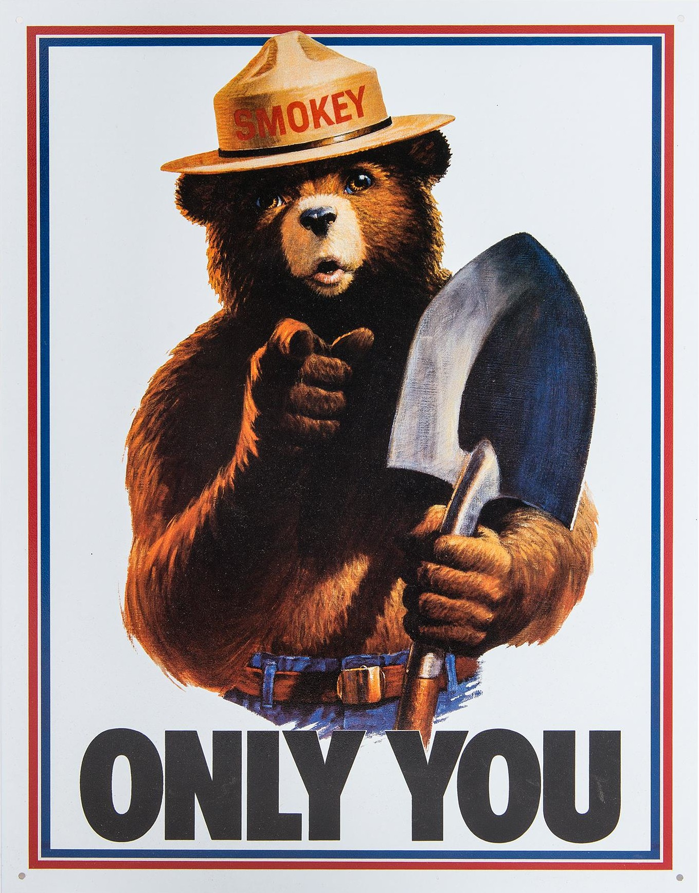

これは、私が通っている職業訓練校のエントランスに貼ってあったポスターです。内容は学校で実施されるゲームデイというイベントの実行委員を募集するポスターです。男性がこちらを指さして君を求めていると言わんばかりの仕草が印象的ですね。こうした構図のイラスト、あなたは見かけたことはないでしょうか。
よく、使われる構図のイラストですが、このイラストには元となったポスターがあるのです。そしてそれが、戦争とかかわりがあることをあなたはご存じでしょうか。
今回は、このポスターにかかわる歴史うんちくを語っていこうと思います。
こんな画像を学校で見つけました。

実はこのポスター元ネタは

これは、第一次世界大戦中に制作された、アメリカ陸軍の募兵広告です。要は、戦争だから軍隊に志願しろってことですね。このポスターは第二次世界大戦でも使いまわされました。
ポスターには「アメリカ陸軍にはあなたが必要だ。最寄りの募兵事務所へ来られたし」と書かれています。
さらにこのポスターにも元ネタがあります。
さらに元ネタは

こちらはイギリスで制作され、俗にキッチナーの募兵ポスターとして有名なものです。
キッチナーとは第一次世界大戦開戦時のイギリス陸軍大臣であったホレイショ・ハーバート・キッチナー元帥のことです。
当時、戦争は短期で終わると考えていた多くの人々とは異なり、キッチナー元帥はこの戦争が長期化し歴史上類を見ない犠牲と消耗を強いられると予見し、自らの指導の下、多くの兵士たちを募兵しました。キッチナーの募兵により新たに入隊した新兵たちは俗に「キッチナー陸軍」などと呼ばれています。
キッチナー元帥は１９１６年６月４日、ロシアに向かうため乗艦していた装甲巡洋艦ハンプシャーがオークニー諸島沖で機雷に接雷し沈没、戦死しました。
ほかの模倣例
キッチナーの募兵ポスターにはこんな模倣例もあります。

模倣例1
こちらもイギリスの募兵広告です。
指をさしている男性はジョン・ブルいい、典型的なイギリス人をイメージして擬人化されたキャラクターです。
このポスターでは「不参加なのは誰だ。君か」などと書いてあり、軍に志願していない若者を咎めるようなことを言ってますね。うざいっす。
模倣例2
続いてはロシアでの例になります。
ロシア白軍の募兵広告で、「なぜあなたは軍にいないのか」と書かれています。１９１９年のもので当時ロシアは、ロシア革命で帝政が崩壊して、モスクワを中心としたボルシェビキ政権とロシア革命およびボルシェビキ政権に反対する保守派や地方勢力が骨肉の内戦を繰り広げていました。
ちなみに、白軍は保守派、地方勢力の総称のほうで、こいつらボルシェビキ政権つまりは赤軍に負けます。

模倣例3
最後にアメリカの例を紹介します。
実はこのポスターはほかのポスターとは違って募兵広告ではありません。
このクマのキャラクターはスモーキー・ベアといって、アメリカ林野局と州林業者全国協会がマスコットをで、山火事の危険性を一般に広める使命を帯びています。
「忘れるな...。君だけが山火事を防ぐことができる」というスローガンも考案されています。
カリフォルニア州など西海岸南部では、その乾燥した気候から山火事が頻繁に発生していて、多くの人命や財産が危険にさらされています。
終わりに
いかがでしたか。今回、ホームページを制作する授業にあたりたまたま目にしたポスターを題材にしてみなした。
日常生活に戦争の名残が残っているというのは日本人には少し驚きだったのではなかったでしょうか。実はこうした日常生活に溶け込んだ戦争や軍隊の名残というのは、今回紹介したイラストだけでなく、歌や美術、言葉、行動様式や普段使われているものなどにも及んでいます。またいつか機会があれば紹介してみたいと思います。
次回予告
英語で鶏と鶏肉はどちらもChicken、じゃあ豚と豚肉は？
～言語に残された戦争と支配の歴史～ でお送りします。
製作者
渡邊 諒一
編年体の説明
平成７年１２月１０日 - 東京都台東区出身
平成２６年 - 大分高等学校普通科卒業
平成３０年 - 別府大学文学部史学・文化財学科卒業
「東西冷戦初期における西側安全保障体制の確立とアメリカ合衆国の役割」(2014)
PDFをダウンロード
編年体の説明
平成７年１２月１０日 - 東京都台東区出身
平成２６年 - 大分高等学校普通科卒業
平成３０年 - 別府大学文学部史学・文化財学科卒業
幼少期より歴史に関心があり、就職とか将来のこととか一切考えず歴史を勉強するためだけに大学入学、卒業後案の定キャリア形成に失敗。いろいろあって現在職業訓練受講中。
卒業論文「東西冷戦初期における西側安全保障体制の確立とアメリカ合衆国の役割」(2014)
PDFをダウンロード
参照
使用されている画像はWikipediaより参照。